1
取って
iPad・取って
USMハラーの中にある、手の届かないiPadを取ってもらいます。
ゲームで確認写真つき・番号つき
ご指摘は「15番のチョコ・あけて」のように、番号でお知らせください。
USMハラーの中にある、手の届かないiPadを取ってもらいます。
ゲームで確認ママが目の前で持っているiPadをもらいます。
ゲームで確認閉じているiPadの青いカバーを開けてもらいます。
ゲームで確認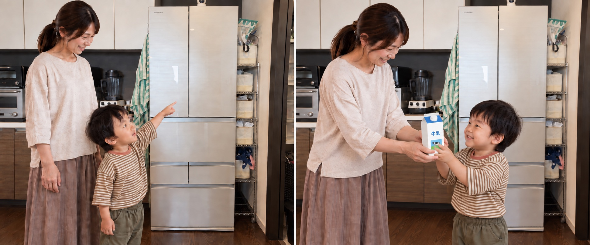
見えない冷蔵庫の中から牛乳を取ってもらいます。
ゲームで確認ママが目の前で持っている牛乳をもらいます。
ゲームで確認閉じている牛乳のふたを開けてもらいます。
ゲームで確認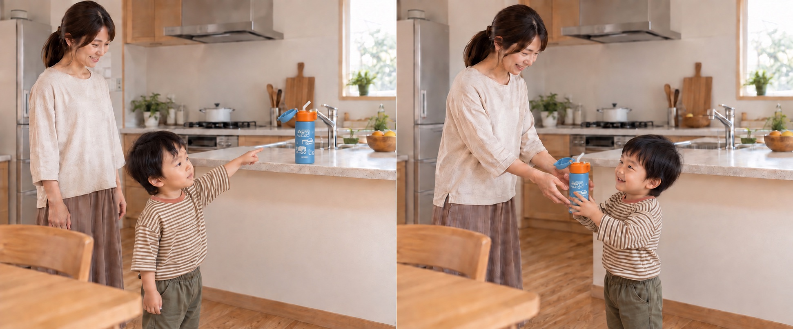
手の届かない場所にある水筒を取ってもらいます。
ゲームで確認ママが目の前で持っている水筒をもらいます。
ゲームで確認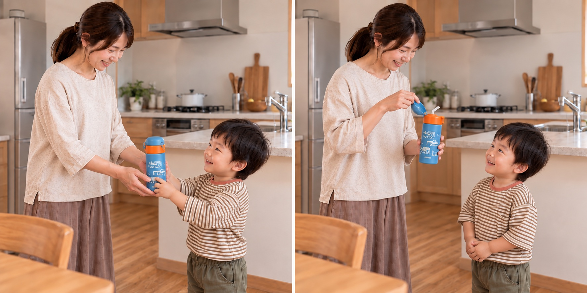
閉じている水筒のふたを開けてもらいます。
ゲームで確認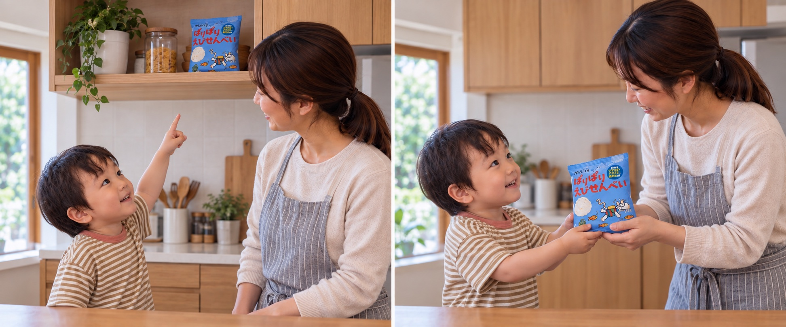
高い棚にある、手の届かないお菓子を取ってもらいます。
ゲームで確認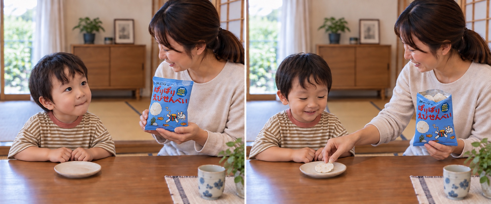
ママが目の前で持っているお菓子をもらいます。
ゲームで確認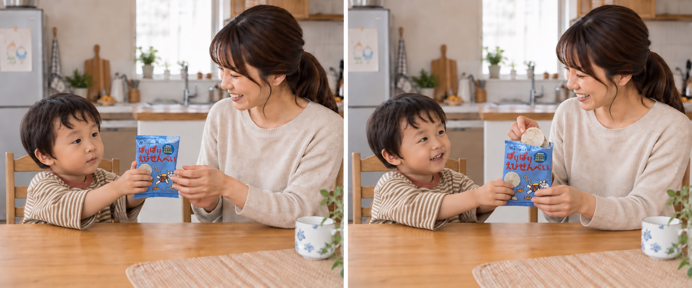
閉じているえびせんべいの袋を開けてもらいます。
ゲームで確認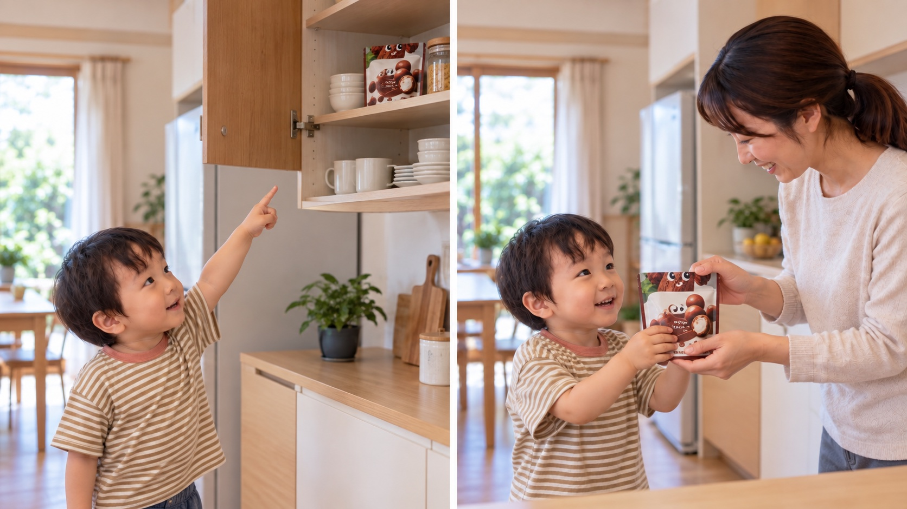
高い棚にある、手の届かないチョコを取ってもらいます。
ゲームで確認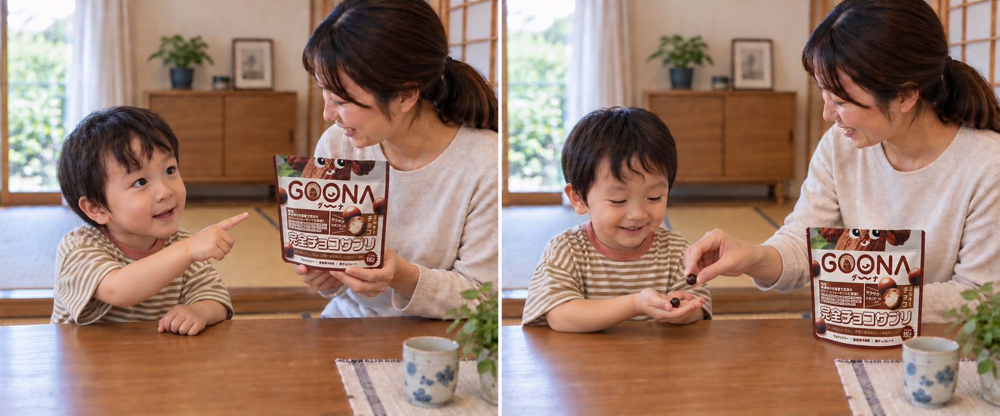
ママが目の前で持っているGOONAのチョコをもらいます。
ゲームで確認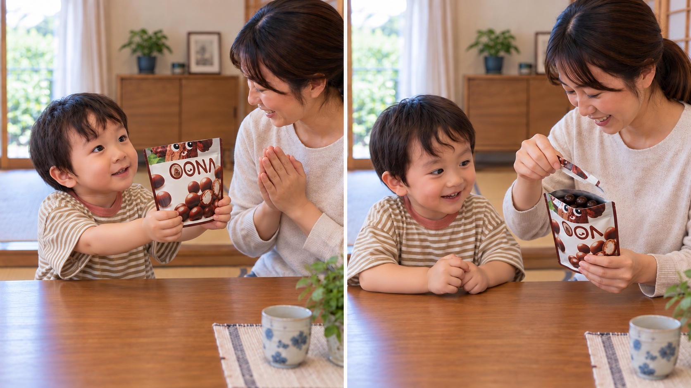
閉じているGOONAの袋を開けてもらいます。
ゲームで確認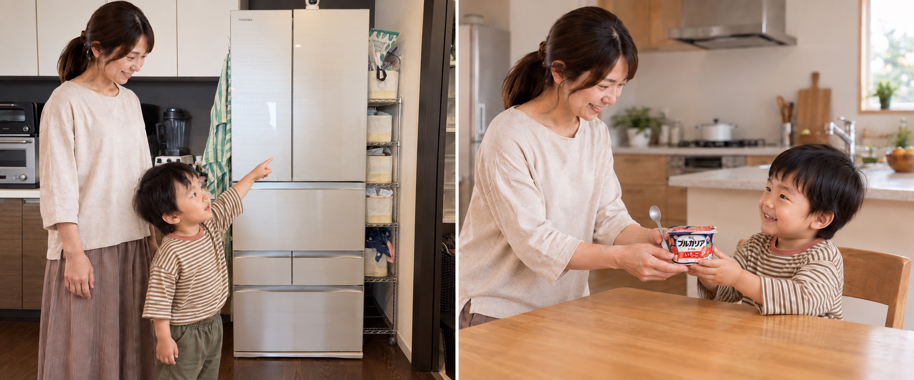
見えない冷蔵庫の中からヨーグルトを取ってもらいます。
ゲームで確認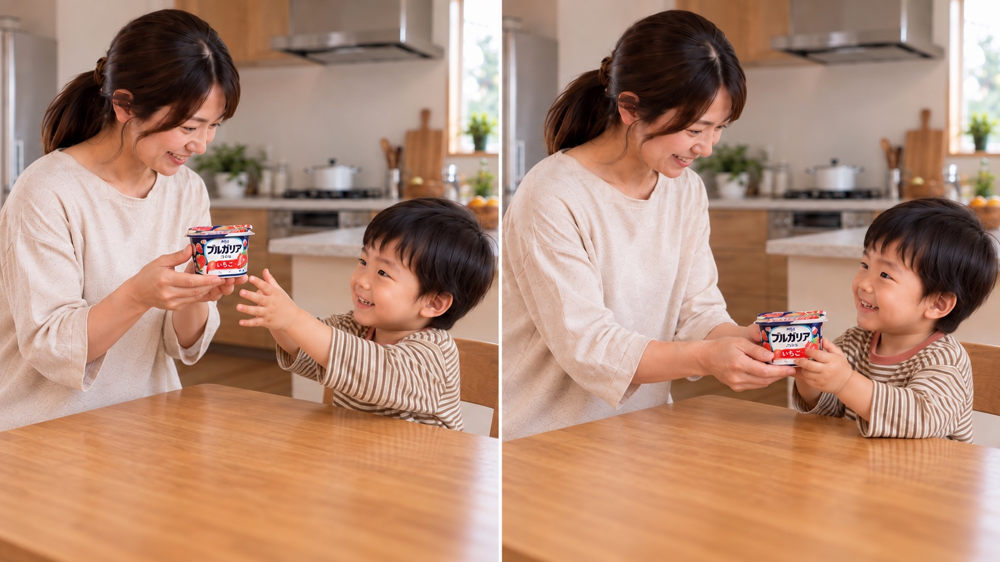
ママが目の前で持っているいちごヨーグルトをもらいます。
ゲームで確認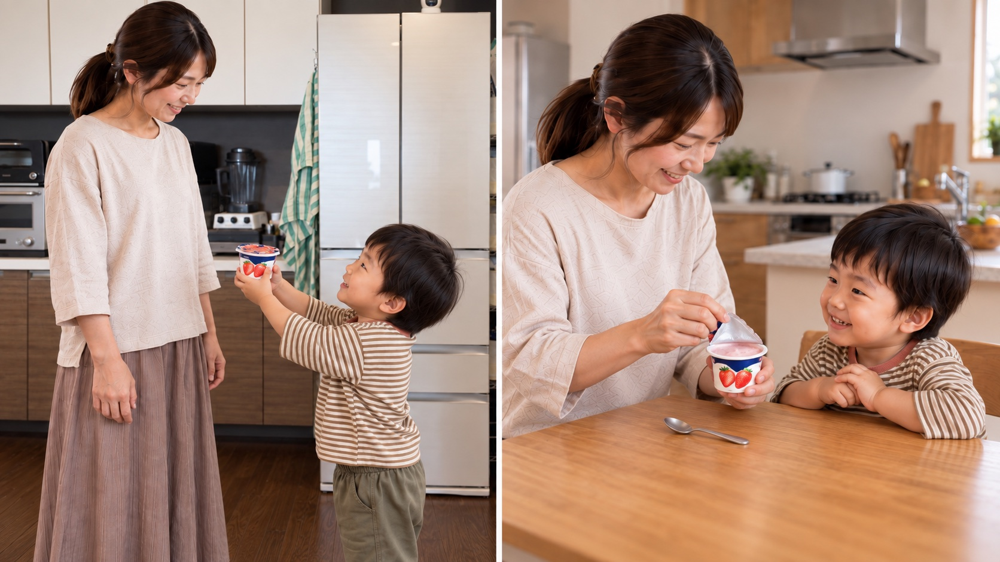
閉じているヨーグルトのふたを開けてもらいます。
ゲームで確認